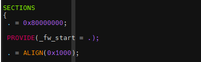
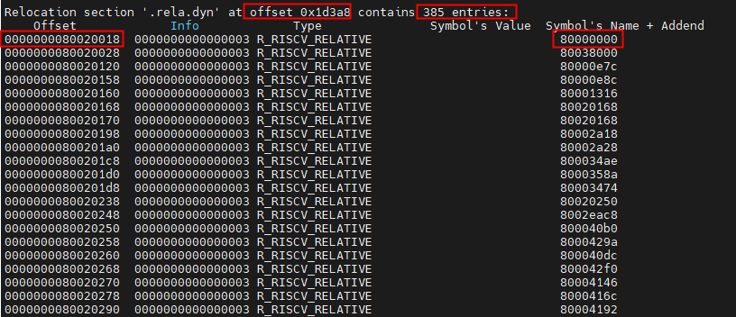

引导Hart启动
_start:
/* Find preferred boot HART id */
MOV_3R s0, a0, s1, a1, s2, a2
# 将a0,a1,a2的参数分别赋值为s0,s1,s2,这3个参数是前一阶段传入的参数。
# a0: hart id
# a1: device tree
# a2: struct fw_dynamic_info地址
call fw_boot_hart
# fw_boot_hart会根据配置为fw_dynamic、fw_jump、fw_payload三种方式进行跳转，
# 后两种方式直接返回-1，即hart id使用随机的方式，而fw_dynamic根据传进来的参数
# 进行解析出boot hart id，a2指向struct fw_dynamic_info
# 我们这里分析使用的是fw_jump的方式。
add a6, a0, zero
# 将经过fw_boot_hart选择的hart id赋值为a6，这样a6保存的就是首先要启动的hart id
MOV_3R a0, s0, a1, s1, a2, s2
# 恢复a0,a1,a2的值，之前是暂存到s0,s1,s2中，因为前面调用了fw_boot_hart会修改
li a7, -1
beq a6, a7, _try_lottery
# 如果a6为-1,即上一阶段没有选定boot hard id，则使用彩票机制随机选择一个
# hard id进行先启动。
/* Jump to relocation wait loop if we are not boot hart */
bne a0, a6, _wait_relocate_copy_done
# 如果选择的boot hard id与当前运行的hart id不等，则进行等待boot hart id先运行。
_try_lottery:（彩票机制选择一个hart id作为启动hart）
/* Jump to relocation wait loop if we don't get relocation lottery */
lla a6, _relocate_lottery
# 加载_relocate_lottery（是一段bss空间）到a6寄存
li a7, 1
amoadd.w a6, a7, (a6)
# a6指向的地址上的值（_relocate_lottery 的地址）做原子加 1，
# _relocate_lottery 的老值写入a6（最原始的值为0）。
bnez a6, _wait_relocate_copy_done
# 如果a6不等于0，表示不是最先执行的hart，则跳转到_wait_relocate_copy_done
# 等待，如果等于0，表示最快运行的hart，则为boot hart往下走
# 与其说是彩票机制，看起来是赛跑机制，最先跑到这段代码的作为boot hart
上面的代码，主要是获取一个hart 作为boot hart，选定了boot hart后，其他的hart就需要等待boot hart先运行完成相关初始化工作再运行。如果opensbi使用的是fw_jump、fw_payload，选择boot hart的方式就是彩票机制。
重定位和初始化
预备信息
_fw_start
_fw_start的值，在链接脚本 build/platform/generic/firmware/fw_jump.elf.ld中指定 
{kind=link}
从通过工具链读取到_fw_start为0x80000000,如下：

.rela.dyn
.rela.dyn是重定位段，重定位是连接符号引用与符号定义的过程。例如，程序调用函数时，关联的调用指令必须在执行时将控制权转移到正确的目标地址。可重定位文件必须包含说明如何修改其节内容的信息。通过此信息，可执行文件和共享目标文件可包含进程的程序映像的正确信息。重定位项即是这些数据。
typedef struct elf32_rela{
Elf32_Addr r_offset;
Elf32_Word r_info;
Elf32_Sword r_addend;
} Elf32_Rela;
typedef struct elf64_rela {
Elf64_Addr r_offset; /* Location at which to apply the action */
Elf64_Xword r_info; /* index and type of relocation */
Elf64_Sxword r_addend; /* Constant addend used to compute value */
} Elf64_Rela;
重定位表的每个条目的内容如上数据结构所示，有3个变量。
- r_offset: 需要重定位地址的偏移，外部符号在got表的偏移
- r_r_info: 重定位的方法
- r_addend：重定位计算的值
使用 riscv64-unknown-linux-gnu-readelf -S build/platform/generic/firmware/fw_jump.elf命令可以看到重定位表的地址。

如上图.rela.dyn的地址为0x8001c3a8，长度为0x2418。
执行riscv64-unknown-linux-gnu-readelf -rW build/platform/generic/firmware/fw_jump.elf可以查看重定位信息表。 
{kind=link}
上图所示，fw_jump.elf的重定位表中有385个条目，即有385个地址需要重定位，上图中r_info是0x3,即类型是R_RISCV_RELATIVE，则重定位方式是按照B+A，B表示执行过程中将共享目标文件装入内存的基本地址，通常生成的共享目标文件的基本虚拟地址为0，在本节中B为_fw_start - FW_TEXT_START；A表示常量加数，用于计算存储在可重定位字段中的值，即r_addend的值，所以0x80020018的地址重定位到0x80000000。
怎么理解_fw_start 和 FW_TEXT_START地址？
- _fw_start表示加载地址
- FW_TEXT_START表示链接地址
在opensbi 1.2版本，_fw_start和FW_TEXT_START是一样的。
{kind=link}
OpenSBI在什么时候引入的PIE支持？
在1.0版本引入的，https://github.com/riscv-software-src/opensbi/commit/0f20e8a?diff=split&w=0
- 链接脚本包含.rela.dyn节，该节中的所有重定位表项均是R_RISCV_RELATIVE类型。
- Self-relocataion发生在非常早期的汇编代码阶段firmware/fw_base.S
- 遍历.rela.dyn节里的所有重定位表项，进行地址修正
- 在重定位完成之前，所有对全局变量的地址引用，需要显式使用lla汇编伪指令（load local address）而不是la
- la在PIE模式下会编译成对GOT表的引用。
rela.dyn和.rel.dyn有什么区别？
.rel.dyn 和 .rela.dyn 都是 ELF 文件中用于存储重定位条目的节（section），它们主要用于动态链接过程中修正全局偏移表（GOT, Global Offset Table）和程序中的某些地址。不过，它们之间存在一些关键差异：
（1）数据结构不同：.rel.dyn 使用的是 REL 类型的重定位条目，每个条目包含两个字段：一个表示需要被重定位的位置的偏移量，另一个表示重定位类型。 .rela.dyn 使用的是 RELA 类型的重定位条目，在 REL 类型的基础上增加了一个 additive constant 字段，使得重定位操作可以直接应用一个立即数到目标位置，而不需要像 REL 那样进行间接计算。这意味着 RELA 类型提供了更直接的重定位能力。 （2）内存占用和效率：RELA 类型由于包含额外的 additive constant 字段，所以每个条目相比 REL 类型会占用更多的空间。然而，RELA 类型在处理时可能因为直接性而稍微提高效率，因为它减少了处理器需要执行的计算步骤。 （3）使用场景：在不同的系统或编译器配置下，可能会优先选择使用其中一种类型。通常，现代系统和编译器更倾向于使用 .rela.dyn，因为它虽然占用更多空间，但提供的直接重定位能力简化了链接过程。 总的来说，.rel.dyn 和 .rela.dyn 都服务于动态链接时的地址修正，主要区别在于重定位条目的格式及其对空间和处理效率的影响。在具体应用中，根据编译器选项和目标系统的偏好，会选择使用其中之一来完成动态链接所需的重定位工作。
/* Save load address */
lla t0, _load_start
# 加载地址存储到t0寄存器：0x0000000080020018
lla t1, _fw_start
# _fw_start存储到t1寄存器：t1片=0x0000000080000000
# _fw_start为链接脚本中设定的起始地址
REG_S t1, 0(t0)
# REG_S是sd，即t1的值存储到t0的地址
# 可以理解为_load_start是一个全局指针（指向事先分配的空间），将fw_jump.elf
# 的起始地址即，在链接脚本中设置的赋值_load_start中存储。
#ifdef FW_PIC
/* relocate the global table content */
lla t0, _link_start
# _link_start存储到t0寄存器：t0 = 0x0000000080020020
REG_L t0, 0(t0)
# 将t0地址的值加载到t0,t0=0x0000000080000000，
# _link_start指向一个dword全局变量的指针，指向的是FW_TEXT_START
# 在firmware/fw_base.S中如下定义
# _link_start:gg
# RISCV_PTR FW_TEXT_START
# 所以上面代码的意思就是将FW_TEXT_START赋值为t0,FW_TEXT_START在
# platform/generic/objects.mk中定义，表示FW TEXT段的开始地址
# 正好也是FW_TEXT_START=0x80000000
# FW_TEXT_START设置的是固件要运行的起始地址，而_fw_start是链接地址
/* t1 shall has the address of _fw_start */
sub t2, t1, t0
# t2 = _fw_start - FW_TEXT_START，计算要运行地址和链接地址的差值
lla t3, _runtime_offset
# t3 = 0x0000000080020060,申请的一个全局变量（bss空间）
REG_S t2, (t3)
# 将运行的地址与链接地址的偏移存储到_runtime_offset指向的地址中
lla t0, __rel_dyn_start
# 重定位表开始地址：0x000000008001c3a8
lla t1, __rel_dyn_end
# 重定位表的结束地址：0x000000008001e7c0
# 结束地址减去起始地址正好size为0x2418,跟前面章节对应。
beq t0, t1, _relocate_done
j 5f
# 如果重定位表的开始地址等于结束地址，说明不需要重定位，直接跳转到
# _relocate_done结束重定位，否则跳转到5标签进行重定位。
2:
REG_L t5, -(REGBYTES*2)(t0) /* t5 <-- relocation info:type */
# REG_L为ld，t0-16地址指向条目的第二个成员变量即info type
li t3, R_RISCV_RELATIVE /* reloc type R_RISCV_RELATIVE */
bne t5, t3, 3f
# 如果info type不是R_RISCV_RELATIVE类型，则跳转到标签
# 接下来就是处理info type为R_RISCV_RELATIVE的重定位
REG_L t3, -(REGBYTES*3)(t0)
# 获取重定位表一个条目中offset的值存储到t3
REG_L t5, -(REGBYTES)(t0) /* t5 <-- addend */
# 获取重定位表一个条目中addend值
add t5, t5, t2
# 即重定位地址为B+A，A为addend值，B=_fw_start - FW_TEXT_START
add t3, t3, t2
REG_S t5, 0(t3) /* store runtime address to the GOT entry */
# 将重定位的地址更新到GOT表中去。
j 5f
# 跳转到标签5继续循环，将所有的重定位条目更新到GOT表中去。
# 标签3和4是针对info type不是R_RISCV_RELATIVE的处理，这里就不再分析了。
3:
lla t4, __dyn_sym_start
4:
REG_L t5, -(REGBYTES*2)(t0) /* t5 <-- relocation info:type */
srli t6, t5, SYM_INDEX /* t6 <--- sym table index */
andi t5, t5, 0xFF /* t5 <--- relocation type */
li t3, RELOC_TYPE
bne t5, t3, 5f
/* address R_RISCV_64 or R_RISCV_32 cases*/
REG_L t3, -(REGBYTES*3)(t0)
li t5, SYM_SIZE
mul t6, t6, t5
add s5, t4, t6
REG_L t6, -(REGBYTES)(t0) /* t0 <-- addend */
REG_L t5, REGBYTES(s5)
add t5, t5, t6
add t5, t5, t2 /* t5 <-- location to fix up in RAM */
add t3, t3, t2 /* t3 <-- location to fix up in RAM */
REG_S t5, 0(t3) /* store runtime address to the variable */
5:
addi t0, t0, (REGBYTES*3)
# REGBYTES在64位系统为8字节大小，__rel_dyn_start偏移3个变量，即24字节大小
# 正好就是一个条目的大小（Elf64_Rela数据结构）。
ble t0, t1, 2b
# 如果t0加了一个条目的大小还小于__rel_dyn_end则跳转到2标签。
j _relocate_done
_wait_relocate_copy_done:
j _wait_for_boot_hart
_relocate_done:
/*
* Mark relocate copy done
* Use _boot_status copy relative to the load address
*/
lla t0, _boot_status
# t0 = 0x0000000080020010
#ifndef FW_PIC
lla t1, _link_start
REG_L t1, 0(t1)
lla t2, _load_start
REG_L t2, 0(t2)
sub t0, t0, t1
add t0, t0, t2
#endif
li t1, BOOT_STATUS_RELOCATE_DONE
# t1 = 1
REG_S t1, 0(t0)
# 将1 写到_boot_status指向的地址
fence rw, rw
# 建立一个全局内存屏障，确保该指令执行前后，所有写操作都完成完成。
# _relocate_done的作用就是写一个标志位到_boot_status表示重定位
# 已经完成。
状态初始化
/* At this point we are running from link address */
/* Reset all registers for boot HART */
li ra, 0
call _reset_regs
# 清除所有的寄存器
/* Zero-out BSS */
lla s4, _bss_start
lla s5, _bss_end
_bss_zero:
REG_S zero, (s4)
add s4, s4, __SIZEOF_POINTER__
blt s4, s5, _bss_zero
# 清除BSS段，BSS段写0
/* Setup temporary trap handler */
lla s4, _start_hang
csrw CSR_MTVEC, s4
# 设置临时的trap handle，里面直接进入WFI
/* Setup temporary stack */
lla s4, _fw_end
li s5, (SBI_SCRATCH_SIZE * 2)
add sp, s4, s5
# 设置临时栈
/* Allow main firmware to save info */
MOV_5R s0, a0, s1, a1, s2, a2, s3, a3, s4, a4
call fw_save_info
MOV_5R a0, s0, a1, s1, a2, s2, a3, s3, a4, s4
初始化平台
/*
* Initialize platform
* Note: The a0 to a4 registers passed to the
* firmware are parameters to this function.
*/
MOV_5R s0, a0, s1, a1, s2, a2, s3, a3, s4, a4
call fw_platform_init
add t0, a0, zero
MOV_5R a0, s0, a1, s1, a2, s2, a3, s3, a4, s4
add a1, t0, zero
struct sbi_platform {
/**
* OpenSBI version this sbi_platform is based on.
* It's a 32-bit value where upper 16-bits are major number
* and lower 16-bits are minor number
*/
u32 opensbi_version;
/**
* OpenSBI platform version released by vendor.
* It's a 32-bit value where upper 16-bits are major number
* and lower 16-bits are minor number
*/
u32 platform_version;
/** Name of the platform */
char name[64];
/** Supported features */
u64 features;
/** Total number of HARTs */
u32 hart_count;
/** Per-HART stack size for exception/interrupt handling */
u32 hart_stack_size;
/** Pointer to sbi platform operations */
unsigned long platform_ops_addr;
/** Pointer to system firmware specific context */
unsigned long firmware_context;
/**
* HART index to HART id table
*
* For used HART index <abc>:
* hart_index2id[<abc>] = some HART id
* For unused HART index <abc>:
* hart_index2id[<abc>] = -1U
*
* If hart_index2id == NULL then we assume identity mapping
* hart_index2id[<abc>] = <abc>
*
* We have only two restrictions:
* 1. HART index < sbi_platform hart_count
* 2. HART id < SBI_HARTMASK_MAX_BITS
*/
const u32 *hart_index2id;
};
struct sbi_platform platform = {
.opensbi_version = OPENSBI_VERSION,
.platform_version =
SBI_PLATFORM_VERSION(CONFIG_PLATFORM_GENERIC_MAJOR_VER,
CONFIG_PLATFORM_GENERIC_MINOR_VER),
.name = CONFIG_PLATFORM_GENERIC_NAME,
.features = SBI_PLATFORM_DEFAULT_FEATURES,
.hart_count = SBI_HARTMASK_MAX_BITS,
.hart_index2id = generic_hart_index2id,
.hart_stack_size = SBI_PLATFORM_DEFAULT_HART_STACK_SIZE,
.platform_ops_addr = (unsigned long)&platform_ops
};
初始化sbi_scratch
/** Representation of per-HART scratch space */
struct sbi_scratch {
/** Start (or base) address of firmware linked to OpenSBI library */
unsigned long fw_start;
/** Size (in bytes) of firmware linked to OpenSBI library */
unsigned long fw_size;
/** Offset (in bytes) of the R/W section */
unsigned long fw_rw_offset;
/** Arg1 (or 'a1' register) of next booting stage for this HART */
unsigned long next_arg1;
/** Address of next booting stage for this HART */
unsigned long next_addr;
/** Privilege mode of next booting stage for this HART */
unsigned long next_mode;
/** Warm boot entry point address for this HART */
unsigned long warmboot_addr;
/** Address of sbi_platform */
unsigned long platform_addr;
/** Address of HART ID to sbi_scratch conversion function */
unsigned long hartid_to_scratch;
/** Address of trap exit function */
unsigned long trap_exit;
/** Temporary storage */
unsigned long tmp0;
/** Options for OpenSBI library */
unsigned long options;
};
接下来的代码就是创建一段空间，给sbi_scratch，然后将里面的值填充。
/* Preload HART details
* s7 -> HART Count
* s8 -> HART Stack Size
*/
lla a4, platform
# 加载platform的地址到a4寄存器
#if __riscv_xlen > 32
lwu s7, SBI_PLATFORM_HART_COUNT_OFFSET(a4)
lwu s8, SBI_PLATFORM_HART_STACK_SIZE_OFFSET(a4)
#else
lw s7, SBI_PLATFORM_HART_COUNT_OFFSET(a4)
# 基于a4地址偏移80字节，即指向platform->hart_count:1？为啥不是128？
lw s8, SBI_PLATFORM_HART_STACK_SIZE_OFFSET(a4)
# 基于a4地址偏移84字节，即指向platform->hart_stack_size:8192
#endif
/* Setup scratch space for all the HARTs*/
lla tp, _fw_end
# 加载_fw_end: 0x80038000
mul a5, s7, s8
# a5 = s7 *s8 = 1 * 0x2000 = 0x2000
add tp, tp, a5
# tp = tp +a5 = 0x80038000 + 0x2000 = 0x8003a000
/* Keep a copy of tp */
add t3, tp, zero
# t3 = tp = 0x8003a000
/* Counter */
li t2, 1
/* hartid 0 is mandated by ISA */
li t1, 0
# tp 是 RISC-V 中的一个特殊寄存器，用于指向临时工作区域（scratch space）。
# 将 _fw_end 地址加载进 tp, 在用 s7,s8 计算出 scratch space, 再加上 tp,
# 这样就相当于分配了一段hart的暂存空间。
_scratch_init:
/*
* The following registers hold values that are computed before
* entering this block, and should remain unchanged.
*
* t3 -> the firmware end address
* s7 -> HART count
* s8 -> HART stack size
*/
add tp, t3, zero
# tp = t3 = 0x8003a000
mul a5, s8, t1
# a5 = s8 *s1 = 0
sub tp, tp, a5
# tp = tp - a5 = 0x8003a000
li a5, SBI_SCRATCH_SIZE
# 加载SBI_SRATCH_SIZE空间到a5，这里是0x1000
sub tp, tp, a5
# tp = tp - a5 = 0x80039000
/* Initialize scratch space */
/* Store fw_start and fw_size in scratch space */
lla a4, _fw_start
sub a5, t3, a4
REG_S a4, SBI_SCRATCH_FW_START_OFFSET(tp)
REG_S a5, SBI_SCRATCH_FW_SIZE_OFFSET(tp)
# 将fw_start和fw_size写到scratch空间
/* Store R/W section's offset in scratch space */
lla a4, __fw_rw_offset
REG_L a5, 0(a4)
REG_S a5, SBI_SCRATCH_FW_RW_OFFSET(tp)
# 将__fw_rw_offset= _fw_rw_start - _fw_start，写到scratch空间。
# 即data段的偏移位置。
/* Store next arg1 in scratch space */
MOV_3R s0, a0, s1, a1, s2, a2
call fw_next_arg1
REG_S a0, SBI_SCRATCH_NEXT_ARG1_OFFSET(tp)
MOV_3R a0, s0, a1, s1, a2, s2
# 存储下一阶段启动的传递的第一个参数，这里是FW_JUMP_FDT_ADDR
# 在platform/generic/objects.mk中配置，= ($(FW_TEXT_START) + 0x2200000))
# FW_JUMP_FDT_ADDR = 0x82200000
/* Store next address in scratch space */
MOV_3R s0, a0, s1, a1, s2, a2
call fw_next_addr
REG_S a0, SBI_SCRATCH_NEXT_ADDR_OFFSET(tp)
MOV_3R a0, s0, a1, s1, a2, s2
# 存储下一阶段启动地址，即opensbi运行阶段要跳转的地址
# 跳转的地址为FW_JUMP_ADDR，object.mk中设置
# = ($(FW_TEXT_START) + 0x200000))
# 所以FW_JUMP_ADDR = 0x80200000
/* Store next mode in scratch space */
MOV_3R s0, a0, s1, a1, s2, a2
call fw_next_mode
REG_S a0, SBI_SCRATCH_NEXT_MODE_OFFSET(tp)
MOV_3R a0, s0, a1, s1, a2, s2
# 将下一阶段启动的模式存储next_mode，这里是S模式：1
/* Store warm_boot address in scratch space */
lla a4, _start_warm
REG_S a4, SBI_SCRATCH_WARMBOOT_ADDR_OFFSET(tp)
# 存储warm_boot启动地址：0x80000354
# 即：firmware/fw_base.S::426行
/* Store platform address in scratch space */
lla a4, platform
REG_S a4, SBI_SCRATCH_PLATFORM_ADDR_OFFSET(tp)
# 存储platform的地址
/* Store hartid-to-scratch function address in scratch space */
lla a4, _hartid_to_scratch
REG_S a4, SBI_SCRATCH_HARTID_TO_SCRATCH_OFFSET(tp)
# 存储_hartid_to_scratch地址，这段是其他hard调用该函数用于分配scratch空间
/* Store trap-exit function address in scratch space */
lla a4, _trap_exit
REG_S a4, SBI_SCRATCH_TRAP_EXIT_OFFSET(tp)
# 存储的是trap退出函数
/* Clear tmp0 in scratch space */
REG_S zero, SBI_SCRATCH_TMP0_OFFSET(tp)
/* Store firmware options in scratch space */
MOV_3R s0, a0, s1, a1, s2, a2
#ifdef FW_OPTIONS
li a0, FW_OPTIONS
#else
call fw_options
#endif
REG_S a0, SBI_SCRATCH_OPTIONS_OFFSET(tp)
MOV_3R a0, s0, a1, s1, a2, s2
/* Move to next scratch space */
add t1, t1, t2
blt t1, s7, _scratch_init
# 完成一个hart的scrach初始化，接着为下一个hart分配一个scratch并初始化。
FDT重定位
/*
* Relocate Flatened Device Tree (FDT)
* source FDT address = previous arg1
* destination FDT address = next arg1
*
* Note: We will preserve a0 and a1 passed by
* previous booting stage.
*/
beqz a1, _fdt_reloc_done
/* Mask values in a4 */
li a4, 0xff
/* t1 = destination FDT start address */
MOV_3R s0, a0, s1, a1, s2, a2
call fw_next_arg1
add t1, a0, zero
MOV_3R a0, s0, a1, s1, a2, s2
beqz t1, _fdt_reloc_done
beq t1, a1, _fdt_reloc_done
/* t0 = source FDT start address */
add t0, a1, zero
/* t2 = source FDT size in big-endian */
#if __riscv_xlen == 64
lwu t2, 4(t0)
#else
lw t2, 4(t0)
#endif
/* t3 = bit[15:8] of FDT size */
add t3, t2, zero
srli t3, t3, 16
and t3, t3, a4
slli t3, t3, 8
/* t4 = bit[23:16] of FDT size */
add t4, t2, zero
srli t4, t4, 8
and t4, t4, a4
slli t4, t4, 16
/* t5 = bit[31:24] of FDT size */
add t5, t2, zero
and t5, t5, a4
slli t5, t5, 24
/* t2 = bit[7:0] of FDT size */
srli t2, t2, 24
and t2, t2, a4
/* t2 = FDT size in little-endian */
or t2, t2, t3
or t2, t2, t4
or t2, t2, t5
/* t2 = destination FDT end address */
add t2, t1, t2
/* FDT copy loop */
ble t2, t1, _fdt_reloc_done
_fdt_reloc_again:
REG_L t3, 0(t0)
REG_S t3, 0(t1)
add t0, t0, __SIZEOF_POINTER__
add t1, t1, __SIZEOF_POINTER__
blt t1, t2, _fdt_reloc_again
boot hard启动完成
_fdt_reloc_done:
/* mark boot hart done */
li t0, BOOT_STATUS_BOOT_HART_DONE
lla t1, _boot_status
REG_S t0, 0(t1)
fence rw, rw
j _start_warm
# boot hart启动完成，写入一个标志位，以便通知其他hart，跳转到热启动
非boot hart等待运行
/* waiting for boot hart to be done (_boot_status == 2) */
_wait_for_boot_hart:
li t0, BOOT_STATUS_BOOT_HART_DONE
lla t1, _boot_status
REG_L t1, 0(t1)
/* Reduce the bus traffic so that boot hart may proceed faster */
nop
nop
nop
bne t0, t1, _wait_for_boot_hart
# 读取_boot_status的标志，判断boot hart是否运行初始化完，如果初始化
# 即可进入_start_warm，否则需要一直等待。
hart 热启动
_start_warm:
/* Reset all registers for non-boot HARTs */
li ra, 0
call _reset_regs
# 对于non-boot HARTS复位寄存器
/* Disable all interrupts */
csrw CSR_MIE, zero
# 关闭所有的中断
/* Find HART count and HART stack size */
lla a4, platform
#if __riscv_xlen == 64
lwu s7, SBI_PLATFORM_HART_COUNT_OFFSET(a4)
lwu s8, SBI_PLATFORM_HART_STACK_SIZE_OFFSET(a4)
#else
lw s7, SBI_PLATFORM_HART_COUNT_OFFSET(a4)
lw s8, SBI_PLATFORM_HART_STACK_SIZE_OFFSET(a4)
#endif
REG_L s9, SBI_PLATFORM_HART_INDEX2ID_OFFSET(a4)
# 加载platform，获取到Hart count和hart stack size
/* Find HART id */
csrr s6, CSR_MHARTID
# 获取当前的hart id
/* Find HART index */
beqz s9, 3f
li a4, 0
1:
#if __riscv_xlen == 64
lwu a5, (s9)
#else
lw a5, (s9)
#endif
beq a5, s6, 2f
add s9, s9, 4
add a4, a4, 1
blt a4, s7, 1b
li a4, -1
2: add s6, a4, zero
3: bge s6, s7, _start_hang
/* Find the scratch space based on HART index */
lla tp, _fw_end
mul a5, s7, s8
add tp, tp, a5
mul a5, s8, s6
sub tp, tp, a5
li a5, SBI_SCRATCH_SIZE
sub tp, tp, a5
# 根据hart index找到对应的scratch space
/* update the mscratch */
csrw CSR_MSCRATCH, tp
# 将scratch地址更新到mscratch寄存器中
/* Setup stack */
add sp, tp, zero
# 设置hart的栈空间
/* Setup trap handler */
lla a4, _trap_handler
#if __riscv_xlen == 32
csrr a5, CSR_MISA
srli a5, a5, ('H' - 'A')
andi a5, a5, 0x1
beq a5, zero, _skip_trap_handler_rv32_hyp
lla a4, _trap_handler_rv32_hyp
_skip_trap_handler_rv32_hyp:
#endif
csrw CSR_MTVEC, a4
# 设置trap处理入口函数_trap_handler
#if __riscv_xlen == 32
/* Override trap exit for H-extension */
csrr a5, CSR_MISA
srli a5, a5, ('H' - 'A')
andi a5, a5, 0x1
beq a5, zero, _skip_trap_exit_rv32_hyp
lla a4, _trap_exit_rv32_hyp
csrr a5, CSR_MSCRATCH
REG_S a4, SBI_SCRATCH_TRAP_EXIT_OFFSET(a5)
_skip_trap_exit_rv32_hyp:
#endif
/* Initialize SBI runtime */
csrr a0, CSR_MSCRATCH
call sbi_init
# scratch的地址作为参数，跳转到sbi_init执行。
小结
{kind=link}
本文参考： [泰晓科技OpenSBI分析1](https://tinylab.org/sbi-firmware-analyze-41/ \"泰晓科技OpenSBI分析1\") [泰晓科技OpenSBI分析2](https://tinylab.org/sbi-firmware-analyze-2/ \"泰晓科技OpenSBI分析2\") [泰晓科技OpenSBI分析3](https://tinylab.org/sbi-firmware-analyze-3/ \"泰晓科技OpenSBI分析3\") [泰晓科技OpenSBI分析4](https://tinylab.org/sbi-firmware-analyze-4/ \"泰晓科技OpenSBI分析4\") [passenger12234的博客 OpenSBI分析](https://blog.csdn.net/passenger12234/category_11411139.html \"passenger12234的博客 OpenSBI分析\") [OpenSBI ELF rela.dyn和.dynsym动态链接过程](https://blog.csdn.net/dai_xiangjun/article/details/123629743 \"OpenSBI ELF rela.dyn和.dynsym动态链接过程\")